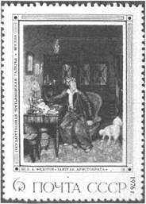
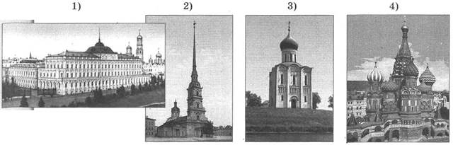
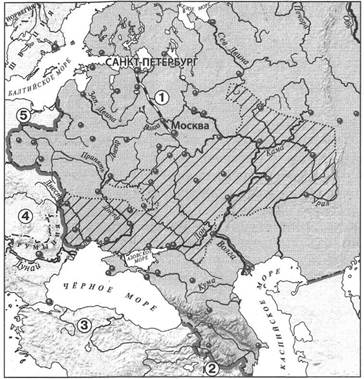
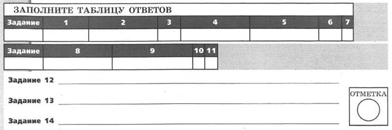
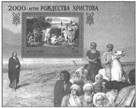
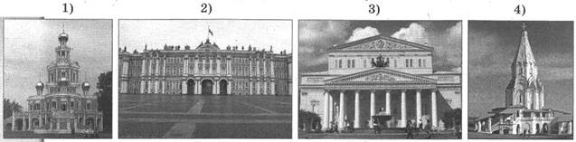
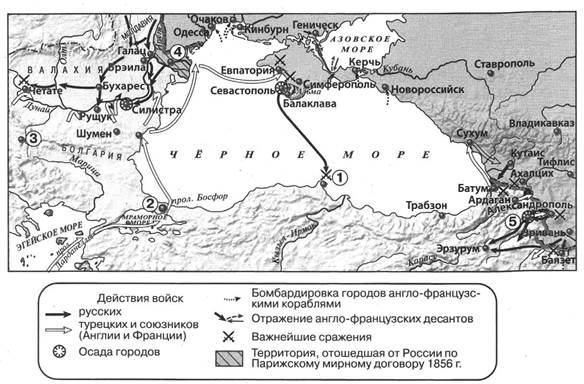
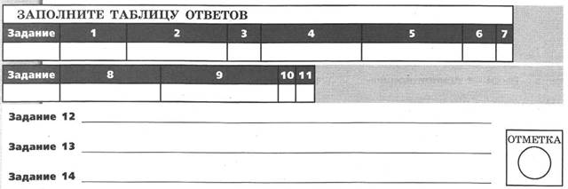
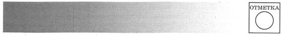
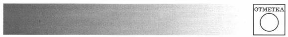

КОНТРОЛЬНАЯ РАБОТА № 1
ВАРИАНТ 1
1. Расположите события в хронологическом порядке.
A) издание указа об обязанных крестьянах
Б) смерть Николая I
B) подавление русскими войсками восстания в Венгрии
Г) первое издание Свода законов Российской империи
Запишите получившуюся последовательность букв.
2. Установите соответствие между событиями и годами.
СОБЫТИЯ
A) открытие железной дороги Санкт-Петербург — Царское Село
Б) издание «чугунного» устава
B) начало обороны Севастополя
ГОДЫ
1) 1826 г.
2) 1837 г.
3) 1849 г.
4) 1854 г.
Запишите цифры, соответствующие выбранным ответам.
3. Прочитайте отрывок из сочинения историка и выберите два верных суждения.
Николай поставил себе задачей ничего не переменять, не вводить ничего нового в основаниях, а только поддерживать существующий порядок, восполнять пробелы, чинить обнаружившиеся ветхости с помощью практического законодательства и всё это делать без всякого участия общества, даже с подавлением общественной самостоятельности, одними правительственными средствами... Для того чтобы существующий порядок действовал правильно, надо было дать учреждениям строгий кодекс. Над созданием такого кодекса работали с 1700 г., и дело не удавалось. Такой кодекс мог быть выработан при указанной программе: если решено поддерживать существующий порядок, то в свод законов должны быть взяты существующие узаконения; новый свод законов должен быть сводом законов действующих, а не кодексом, созданным отвлечённой мыслью. Эту задачу прежде всего и взялся разрешить Николай. Для этого он учредил при себе особое отделение Собственной канцелярии и в руководители дела призвал лицо, давно искусившееся в этой работе, знакомого нам М.М. Сперанского.
1) В данном отрывке идёт речь о III отделении Собственной его императорского величества канцелярии.
2) Автор считает, что Николай I стремился провести в стране широкомасштабные реформы.
3) Автор считает, что над созданием кодекса работали с периода правления Петра I.
4) Государственному деятелю, упомянутому в отрывке, удалось создать кодекс, о котором идёт речь.
5) Государственный деятель, упомянутый в отрывке, руководил проведением реформы управления государственными крестьянами.
4. Установите соответствие между событиями (процессами, явлениями) и участниками этих событий (процессов, явлений).
СОБЫТИЯ (ПРОЦЕССЫ, ЯВЛЕНИЯ)
A) деятельность кружка славянофилов
Б) сражение на реке Альме
B) подавление восстания в Царстве Польском
УЧАСТНИКИ
1) И.Ф. Паскевич
2) А.С. Меншиков
3) А.Х. Бенкендорф
4) А.С. Хомяков
Запишите цифры, соответствующие выбранным ответам.
5. Установите соответствие между памятниками культуры и их авторами.
ПАМЯТНИКИ КУЛЬТУРЫ
A) картина «На пашне. Весна»
Б) Большой театр в Москве
B) опера «Русалка»
АВТОРЫ
1) О.И. Бове
2) Т.Г. Шевченко
3) А.С. Даргомыжский
4) А.Г. Венецианов
Запишите цифры, соответствующие выбранным ответам.
6. Рассмотрите изображение и укажите два верных суждения.
1) Данная марка выпущена к 200-летию создания изображённой на ней картины.
2) В период, когда была выпущена данная марка, изображённая на ней картина хранилась в Москве.
3) Автор картины является родоначальником критического реализма в русской живописи.
4) На картине, помещённой на марке, изображён представитель крестьянства.
5) Автор картины является также автором картины «Явление Христа народу».

7. Укажите памятник архитектуры, созданный в первой половине XIX в.

8. На основе данных статистической таблицы завершите представленные ниже суждения, соотнеся их начала и варианты завершения.
Население России в 1815 г. и в 1851 г.
|
Годы |
Всего, млн чел. |
В том числе городское население |
В том числе крепостные |
||
|
млн чел. |
в % ко всему населению |
млн чел. |
в % ко всему населению |
||
|
1815 |
45,0 |
1,7 |
3,8 |
20,8 |
46,2 |
|
1851 |
68,0 |
3,4 |
5,0 |
21,7 |
31,9 |
НАЧАЛО СУЖДЕНИЯ
A) В 1815-1851 гг. в два раза увеличилась численность
Б) В 1815-1851 гг. доля крепостных в структуре населения страны
B) В 1815-1851 гг. менее чем на 1 млн человек увеличилась численность
ВАРИАНТЫ ЗАВЕРШЕНИЯ СУЖДЕНИЯ
1) крепостных.
2) городского населения.
3) всего населения России.
4) сократилась.
5) увеличилась.
Запишите цифры, соответствующие выбранным ответам.
9. Прочитайте текст (каждое предложение пронумеровано), в котором нарушена последовательность предложений.
(1) В этой ситуации европейские державы поспешили оказать помощь Османской империи. (2) Англия и Франция, в отличие от Австрии, не ограничились дипломатическим нажимом и объявили России войну. (3) Тогда же русский флот под командованием П.С. Нахимова разгромил в Синопской бухте турецкий флот. (4) Осенью 1853 г. русские войска одержали победу над турецкими войсками, наступавшими на Тифлис. (5) Поводом для войны стал спор между католической и православной церковью по поводу прав в святых палестинских землях, находившихся во владениях Османской империи. (6) Под угрозой вступления Австрии в войну Россия была вынуждена выполнить её требование о выводе своих войск из Дунайских княжеств. (7) Летом 1853 г. Николай I, обвинив турецкое правительство в притеснении православных, приказал своим войскам занять Дунайские княжества, составлявшие пограничный с Россией регион Османской империи.
Запишите правильную последовательность предложений.
Рассмотрите карту и выполните задания 10—12.

10. Какой район обозначен на карте штриховкой?
1) район преобладания оброчной системы
2) район, где в первой четверти XIX в. была отменена личная зависимость крестьян от помещиков
3) район, где помещичьи хозяйства не имели большого значения
4) район производства хлеба на продажу
11. Какой цифрой на карте обозначена территория государства, правительству которого российские войска помогли подавить восстание в 1849 г.?
12. Запишите год, когда было завершено строительство объекта, обозначенного на карте цифрой 1.
Ответ:
13. Запишите термин, о котором идёт речь.
Межсословная категория населения в России XVIII-XIX вв.; выходцы из духовенства, купечества, мещанства, крестьянства, обедневшего дворянства. Как правило, мелкие чиновники, студенты, люди интеллектуальных профессий.
Ответ:
14. Прочитайте отрывок из сочинения историка и запишите фамилию, пропущенную в тексте.
Плавание ____ и Лисянского было признано географическим и научным подвигом. В его честь была выбита медаль с надписью: «За путешествие кругом света 1803-1806». Результаты экспедиции были обобщены в обширных географических трудах её участников.
Первое плавание россиян вышло за рамки «дальнего вояжа». Оно принесло славу русскому флоту.
Личности командиров кораблей заслуживают особого внимания. Несомненно, что они были прогрессивными для своего времени людьми, горячими патриотами, неустанно радевшими за судьбу «служителей»-матросов, благодаря мужеству и трудолюбию которых плавание прошло на редкость благополучно. Отношения ____ и Лисянского — дружеские и доверительные — решающим образом содействовали успеху дела.
Ответ:

ВАРИАНТ 2
1. Расположите события в хронологическом порядке.
A) окончание строительства железной дороги Санкт-Петербург — Москва
Б) учреждение II отделения Собственной его императорского величества канцелярии
B) смерть Николая I
Г) открытие железной дороги Санкт-Петербург — Царское Село Запишите получившуюся последовательность букв.
2. Установите соответствие между событиями и годами.
СОБЫТИЯ
A) подписание Туркманчайского мирного договора
Б) начало проведения денежной реформы Е.Ф. Канкрина
B) разгром кружка петрашевцев
ГОДЫ
1) 1828 г.
2) 1839 г.
3) 1849 г.
4) 1854 г.
Запишите цифры, соответствующие выбранным ответам.
3. Прочитайте отрывок из сочинения историка и выберите два верных суждения.
Когда они сгруппировались в два известных нам лагеря западников и славянофилов, оказалось, что оба эти лагеря одинаково чужды правительственному кругу, одинаково далеки от его взглядов и работ и одинаково для него подозрительны. Неудивительно, что в таком положении очутились западники. Мы знаем, как, преклоняясь перед западной культурой, они судили русскую действительность с высоты европейской философии и политических теорий; они, конечно, находили её отсталой и подлежащей беспощадной реформе. Труднее понять, как оказались в оппозиции славянофилы. Не один раз правительство Николая I (устами министра народного просвещения графа ____) объявляло свой лозунг: православие, самодержавие, народность. Эти же слова могли быть и лозунгом славянофилов, ибо указывали на те основы самобытного русского порядка, церковного, политического и общественного, выяснение которых составляло задачу славянофилов. Но славянофилы понимали эти основы иначе, чем представители «официальной народности». Для последних слова «православие» и «самодержавие» означали тот порядок, который существовал в современности: славянофилы же идеал православия и самодержавия видели в московской эпохе, где церковь им казалась независимой от государства носительницей соборного начала, а государство представлялось «земским», в котором принадлежала «правительству сила власти, земле — сила мнения».
1) В тексте пропущена фамилия С.С. Уварова.
2) Автор считает, что понять причину оппозиционности правительству славянофилов труднее, чем понять причину оппозиционности западников.
3) Автор считает, что идеалом славянофилов была эпоха Петра I.
4) Представители обоих оппозиционных течений общественной мысли, о которых идёт речь, относились к радикальному (революционному) направлению.
5) Автор считает, что лозунги «православие» и «самодержавие» славянофилы понимали так же, как и правительство Николая I.
4. Установите соответствие между событиями (процессами, явлениями) и участниками этих событий (процессов, явлений).
СОБЫТИЯ (ПРОЦЕССЫ, ЯВЛЕНИЯ)
A) деятельность кружка славянофилов
Б) оборона Севастополя
B) проведение реформы управления государственными крестьянами
УЧАСТНИКИ
1) Э.И. Тотлебен
2) А.А. Аракчеев
3) П.Д. Киселёв
4) Ю.Ф. Самарин
Запишите цифры, соответствующие выбранным ответам.
5. Установите соответствие между памятниками культуры и их авторами.
ПАМЯТНИКИ КУЛЬТУРЫ
A) опера «Жизнь за царя»
Б) Большой Кремлёвский дворец
B) картина «Завтрак аристократа»
АВТОРЫ
1) П.А. Федотов
2) П.С. Мочалов
3) М.И. Глинка
4) К.А. Тон
Запишите цифры, соответствующие выбранным ответам.
6. Рассмотрите изображение и укажите два верных суждения.

1) Почтовый блок выпущен ровно через 200 лет после того, как была написана изображённая на нём картина.
2) Картина, изображённая на почтовом блоке, написана в рамках критического реализма.
3) Автор картины, изображённой на почтовом блоке, — А.А. Иванов.
4) Автор картины, изображённой на почтовом блоке, является также автором картины «Последний день Помпеи».
5) Почтовый блок посвящён событию, с которым непосредственно связано понятие «новая эра» («наша эра»).
7. Укажите памятник архитектуры, созданный в первой половине XIX в.

8. На основе данных статистической таблицы завершите представленные ниже суждения, соотнеся их начала и варианты завершения.
Промышленность в России во второй четверти XIX в.
|
Годы |
Число всех фабрик |
Рабочих |
|
1825 |
5261 |
210 567 |
|
1832 |
5656 |
272 490 |
|
1842 |
6930 |
455 827 |
|
1850 |
9843 |
517 679 |
НАЧАЛО СУЖДЕНИЯ
A) Среднее ежегодное увеличение количества фабрик было наибольшим
Б) Среднее ежегодное увеличение численности рабочих было наибольшим
B) В 1850 г. в среднем на каждой фабрике работало
ВАРИАНТЫ ЗАВЕРШЕНИЯ СУЖДЕНИЯ
1) в период 1832-1842 гг.
2) в период 1825-1832 гг.
3) более 30 рабочих.
4) в период 1842-1850 гг.
5) менее 30 рабочих.
Запишите цифры, соответствующие выбранным ответам.
9. Прочитайте текст (каждое предложение пронумеровано), в котором нарушена последовательность предложений.
(1) В январе 1829 г. Грибоедов и сотрудники посольства погибли в ходе резни, устроенной обезумевшей толпой. (2) Выдающуюся роль в выработке названных условий договора сыграл А.С.. Грибоедов, вскоре затем назначенный министром-посланником в Персию. (3) По этому договору к России отходили Эриванское и Нахичеванское ханства, определялась русско-персидская граница по Араксу и подтверждалось исключительное право России иметь военный флот на Каспийском море. (4) В 1827 г. русские войска взяли Эривань и Тавриз, после чего начались мирные переговоры. (5) В 1826 г. Персия объявила войну России. (6) Власти Персии пошли на этот шаг, находясь под влиянием британских агентов, которые целенаправленно стремились к ослаблению российского влияния в Закавказье. (7) В феврале 1828 г. был подписан Туркманчайский мирный договор.
Запишите правильную последовательность предложений.
Рассмотрите карту и выполните задания 10—12.

10. Укажите год, когда началась война, военные действия которой обозначены на карте.
1) 1849 г.
2) 1853 г.
3) 1854 г.
4) 1855 г.
11. Укажите цифру, которой на карте обозначена столица государства — противника России в данной войне.
12. Запишите название сражения, обозначенного на карте цифрой 1.
Ответ:
13. Запишите термин, о котором идёт речь.
Принятое в исторической и философской литературе обозначение учения о возможности преобразования общества на социалистических принципах социальной справедливости, свободы и равенства ненасильственным способом, силой пропаганды и примера.
Ответ:
14. Прочитайте отрывок из сочинения историка и запишите название, пропущенное в тексте.
...И хотя, начиная с 1805 г., число школ увеличивалось незначительно, частные пожертвования на нужды образования позволили открыть ряд новых учебных заведений, например Ришельевский лицей (1817) в Одессе (в дальнейшем преобразованный в университет), Лазаревский институт изучения восточных языков в Москве (1815). Отметим, что в эти годы на казённые средства был также открыт ставший впоследствии знаменитым ____ лицей (1811). Этот лицей был открыт в противовес частным пансионам или домашнему обучению, которое осуществляли, как правило, французы-эмигранты, многие из них к тому же вели активную католическую пропаганду. В провинции же в казённых учебных заведениях учились, как правило, дети разночинцев (и даже дети крестьян), так как провинциальные дворяне, к огорчению Министерства народного просвещения, предпочитали обучение у частных учителей.
Ответ:

КОНТРОЛЬНАЯ РАБОТА № 2
ВАРИАНТ 1
1. В 1826 г. в России был издан новый цензурный устав. Какое название дали современники этому уставу? В чём смысл такого названия? Укажите одно событие, ставшее причиной издания этого устава.
2. Считается, что поражение России в Крымской войне привело к серьёзному ущемлению её прав и интересов. Приведите не менее двух аргументов, подтверждающих данную точку зрения.
3. Прочитайте отрывок из сочинения историка и выполните задания.
Русские профессора должны были читать теперь русскую науку, основанную на русских началах, как их формулировал ____, занимавший пост министра народного просвещения в 1834-1849 гг.
Новый дух преподавания ____ определил в своём обращении к попечителям в знаменитой триединой формуле: «православие, самодержавие, народность». В записке, представленной Николаю к десятилетию своего управления, он возвратился к этой формуле и чуть ли не своему изобретению приписал спасение России от «общественной бури, потрясшей Европу»...
Так сложилась боевая политическая формула, которой суждено было до конца старого порядка сделаться его знаменем.
Впишите фамилию государственного деятеля, дважды пропущенную в отрывке. Укажите название направления в общественном движении второй четверти XIX в., одним из главных идеологов которого являлся этот деятель.
Напишите «триединую формулу», созданную указанным вами государственным деятелем. В чём, по мнению названного государственного деятеля, состоит спасительное значение этой формулы для России?
Укажите название ещё одного любого направления в общественном движении России второй четверти XIX в., о котором не идёт речь в отрывке. Какие цели преследовали представители этого направления? Какие методы были готовы использовать для достижения этих целей?
4. Сравните экономическое развитие России в первой и во второй четвертях XIX в. Самостоятельно сформулируйте линии (критерии) сравнения. Приведите две общие характеристики и два различия. Заполните таблицы.
Общее
|
Линии (критерии) сравнения |
Первая и вторая четверти XIX в. |
Различия
|
Линии (критерии) сравнения |
Первая четверть XIX в. |
Вторая четверть XIX в. |

ВАРИАНТ 2
1. Несмотря на героизм русских воинов, Россия потерпела поражение в Крымской войне. Укажите название мирного договора, подписанного по итогам Крымской войны. Укажите фамилию одного любого героя обороны Севастополя. Укажите одну причину поражения России в Крымской войне.
2. Существует точка зрения, что в период царствования Николая I проводилась политика, направленная на укрепление социально-экономических позиций дворянства. Приведите не менее двух аргументов, подтверждающих данную точку зрения.
3. Прочитайте отрывок из сочинения историка и выполните задания.
____ повёл дело таким образом, что сначала собрал все законы, изданные с 1649 г., т. е. со времени Уложения, а затем из этого собрания законодательного материала составил систематический свод действующих законов. Такой способ работы был указан самим императором, который не желал «сочинения новых законов», а велел «собрать вполне и привести в порядок те, которые уже существуют». В 1833 г. труд был закончен. Было отпечатано два издания: во-первых, Полное собрание законов Российской империи и, во-вторых, Свод законов Российской империи. Полное собрание заключало в себе все старые законы и указы, начиная с Уложения 1649 г. и до воцарения императора Николая. Они были расположены в хронологическом порядке и заняли 45 больших томов. Из этих законов и указов было извлечено всё то, что ещё не утратило силы действующего закона и годилось для будущего свода. Извлечённый законодательный материал был распределён по содержанию в определённой системе. Эти-то законы и были напечатаны в систематическом порядке в 15 томах под названием Свода законов.
Впишите фамилию государственного деятеля, пропущенную в данном отрывке. Как называлось учреждение, которое возглавлял этот государственный деятель в период, о котором идёт речь в отрывке?
Укажите два этапа, на которые была разделена вся описанная в тексте работа.
Укажите любые две меры, принятые в целях борьбы с революционным движением императором, упомянутым в отрывке.
4. Сравните взгляды славянофилов и сторонников теории графа С.С. Уварова. Самостоятельно сформулируйте линии (критерии) сравнения. Приведите две общие характеристики и два различия. Заполните таблицы.
Общее
|
Линии (критерии) сравнения |
Славянофилы и сторонники теории графа С.С. Уварова |
Различия
|
Линии (критерии) сравнения |
Славянофилы |
Сторонники теории графа С.С. Уварова |
